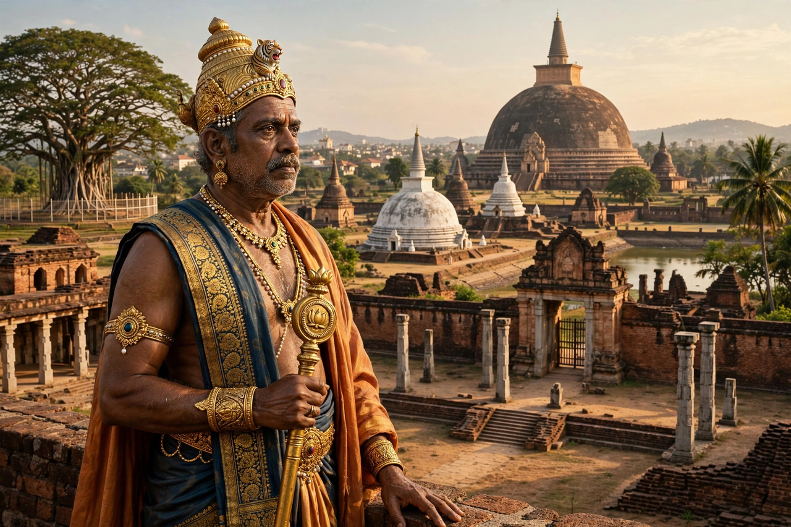

Elara, known in Tamil as Ellalan, was a member of the Chola dynasty who ruled the Anuradhapura Kingdom in Sri Lanka from about 205 to 161 BCE.
Though an invader from South India in Sinhalese chronicles such as the Mahavamsa and Culavamsa, Elara is praised there as a just ruler — famed for a bell of justice at his palace gate and for punishing his own son for killing a calf. Tamil tradition celebrates him as a righteous king (Manu Needhi Cholan lineage).
At about age 70 he was defeated and killed in single combat at Anuradhapura's south gate by the young prince Dutugamunu, who ordered him cremated with honours and built a tomb respected for centuries.